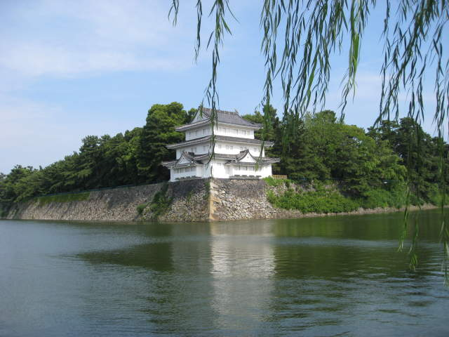

This was actually my first view of what a Japanese "castle" was like. There was no drawbridge, no princess in a tower, no dragon on top. There was a moat, however. Here wasn't the castle itself. Just a decorative building in the corner.
I didn't feel like swimming down this way, but I think it was a dead end.
Here's a map of the layout of Nagoya castle. If nothing else, it told me where the restrooms are.
I saw these guys taking a picture in front of a big golden fish. I wasn't sure about the significance of said fish, but I started to ponder just what this fish was all about.
Here's a shot of Nagoya castle, in all its splendor. Yay for cliches.
Another shot of Nagoya castle.

It was hot and humid all over Japan. That would not stop me from getting my picture taken with the castle.
Inside the castle, I saw the golden fish again. There was an explanation, so I figured I'd finally learn why this fish is so special. The explanation was in Japanese though, which I cannot read. Later on, as I'm putting together this web page, I looked it up on Wikipedia. This golden fish is called "Kin-no-Shachihoko". It's the symbol of Nagoya. That's why it's famous, as far as I can tell.
Arquebuses for display in Nagoya castle.
Authentic samurai outfits on display.
Cartoonish nobles of the past are described on the wall. Japanese art is serene and peaceful, and so were there rulers. Well, maybe not all of them. The one in the middle seems upset at being drawn with a small head.
Here's a 3D historical model of the Nagoya Castle and its surroundings.
I was able to climb to the top of this castle and get some sweeping views.
Nagoya castle was richly immersed in foliage despite its urban surroundings.
An overhead shot of a temple in Nagoya.
You can see the water separating the castle from the bustling city around it.
Temples hide in the bushes around Nagoya castle. Sorry, there's not much else to say about this castle. At least not as an English speaker.
Back